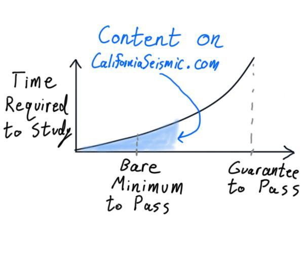

Lecture 0
Enter the Seismic Exam
What is the Seismic Principles Exam?
The California Seismic Principles Exam is one of two state-specific exams required by California that an engineer-in-training (EIT) must pass before obtaining an official Civil PE license. This license will grant the title of Professional Engineer,
and will allow a person to legally use a variety of Engineer
titles that are protected in California, which all bear varying degrees of responsibility on projects. Generally, an engineer's PE stamp is also included in project proposals, which denotes them as a person of authority on the project. Specifically on a project, a PE license allows the engineer to stamp drawings and calculations that are typically required by California Buildings Standards Commission (CBSC)/ (CBC) for the issuance of a construction permit. But if you’re reading this, you probably know all that. For most EIT’s, the Seismic Exam is yet another requirement they need to fulfill to obtain their license. The exam itself is 55 questions long over 150 minutes.
Never Tell Me the Odds
Most test takers often take the pass rate into consideration in order to determine how much effort they should put in before and after the exam. Luckily, the Board of Professional Engineers, Land Surveyors, and Geologists has some historical information available.

Around three to five thousand people sit for the Seismic Exam each year. Because there are repeat test takers, the actual number of people passing the exam each year is obviously much less.

The typical pass rate was around 45-50% in the past few years, with a slight upwards trend.

The next important question arises: How many questions do I need to answer correctly to pass? Since the Board modified the decision notification to Pass/Fail after Spring 2009, there is only public historical data for the question cut-rate from before 2009. Since this information is over a decade old, it should remain an interesting fact rather than a solid predictor of the passing score. Therefore, the speculated passing score is 50%.
Remember, these statistics are simply for consideration. Some ways you can improve your passing probability include studying more, increasing familiarity with common questions, and getting a good night's sleep!
What am I Actually Being Tested On?
Note: the below percentages are approximate based on the author's interpretation.

Some people think that structural engineering is simply about following the guidelines created by code committees. In actuality, structural engineering requires sound engineering judgement, efficient time management, and work accountability. The Seismic Exam will not test all of these skills, but it will test your ability to follow the current legal code book that defines design parameters for typical building structures. The overwhelming majority of questions on the exam relate to code sections found within a few chapters of ASCE 7-16.
Remember this exam is a gatekeeper to the Civil PE license, and there are many types of Civil disciplines. This is not a test that proves you can do structural engineering on your own. So if you’re feeling anxious about what you need to learn, remember that this exam is relatively confined with questions that don’t require extensive knowledge beyond ASCE 7 and basic statics.
What Code Books Do I Need?
A list of recommended resources is available at the engineering board’s website. There are 6 books/codes/standards listed. The most important code reference is ASCE 7-16 (The 7 stands for which ASCE code book, the 16 stands for the year it came out. Future references to this book will use the shorthand of ASCE 7). The most common types of questions on the seismic exam will require direct reference of ASCE 7 to answer them. From the author’s perspective, you can get by with that single code book (and any accumulated notes). However to nab some additional potential questions, it won’t hurt to have a copy of the SDPWS and TMS. There are also some worthwhile sections in the CBC to have at least printed and put into a binder. This topic is best explained in its own section though, so the materials you bring to the exam are listed more clearly under the Exam Info
tab.
How Much Should I Study?
Your background and ability to solve sample questions is the best indicator of additional study time required to pass the exam. This will vary based on a variety of factors, from the classes you took in college to your current professional experience. Some people on popular engineer forums report studying for hundreds of hours, while others just start a couple weeks before the exam. Depending on your free time outside of work, you’ll have to gauge the time required yourselves. However, starting a couple months before the exam date certainly seems reasonable for most people.
The pie chart shown below displays the percentage breakdown of test takers per discipline for the PE national exam. The second half of the PE national exam is in a chosen discipline, whereas the Seismic Exam is most aligned with structural engineering. Therefore, we could argue that around 20% of people taking the Seismic Exam are inherently familiar with the exam material and only require reviewing, whereas the remaining 80% of test takers will need more serious studying for the exam.

Warning!
I cannot stress how important it is to utilize practice exams to the best of your abilities! The average test taker will undoubtedly have found some practice exams (legally or not) for their studies. If at all possible, consider leaving a full practice exam towards the end of your studies. A week before the exam, try taking the test in a timed setting with minimal distraction, without using any resources other than the ones you’re bringing to the exam. The results from a strict self-imposed exam can give great insight to your current preparation level, but it doesn’t work if you’ve already used that practice exam to study! If you can, consider leaving a full practice exam untouched for final preparations.
Moving Forward
As you continue your journey studying to pass the exam and get your PE license, know that California Seismic is here to help. Even so, our resources won't get you through the exam, YOU will. The content on this website provides enough material to exceed some hypothetical minimum threshold, so now it's just up to you!